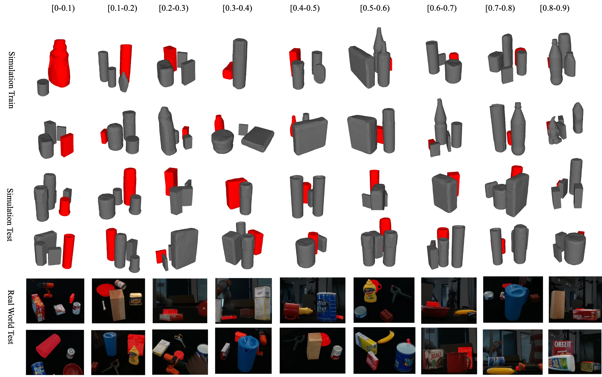
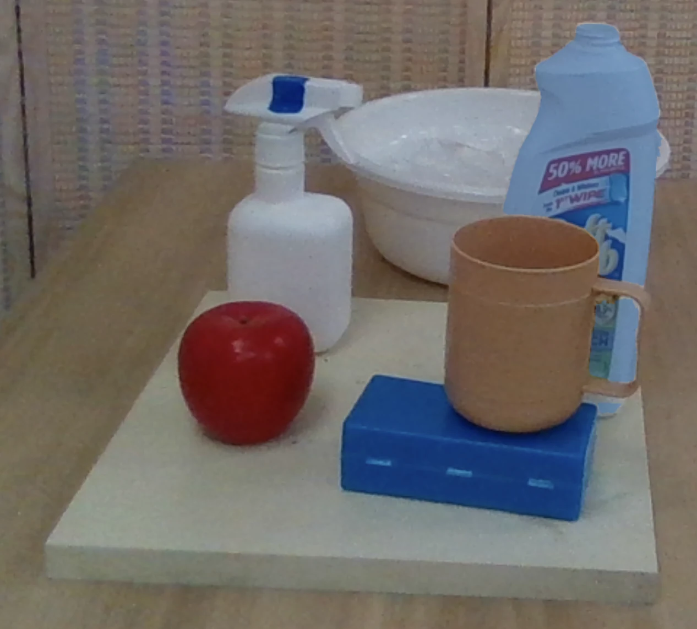
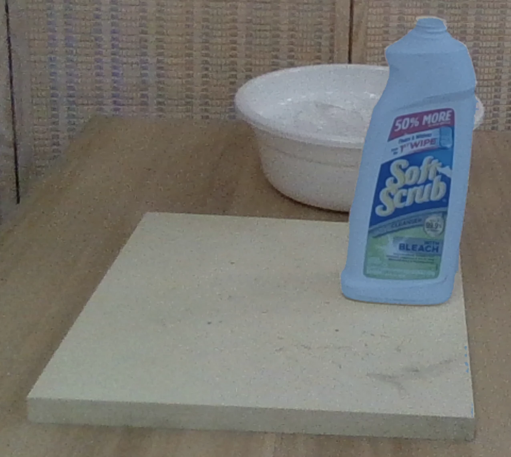
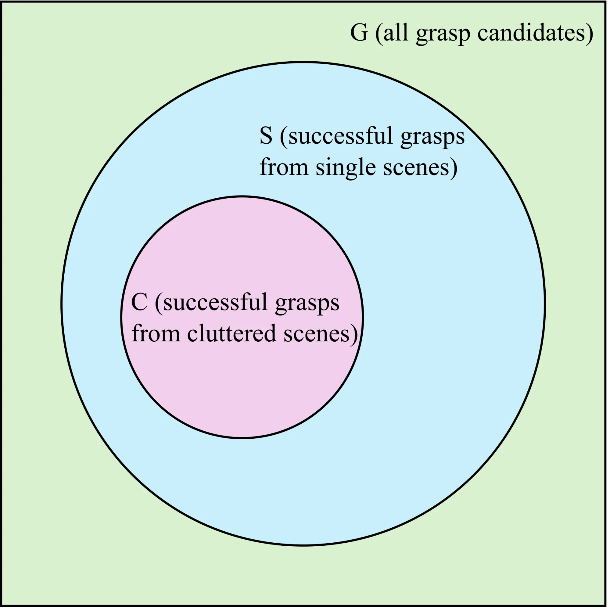
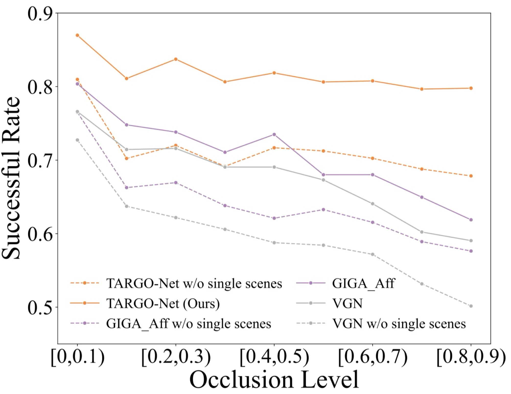
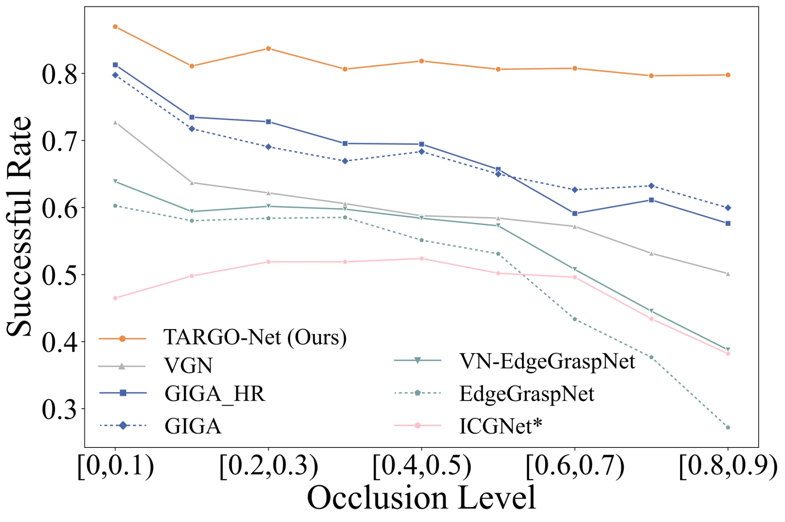
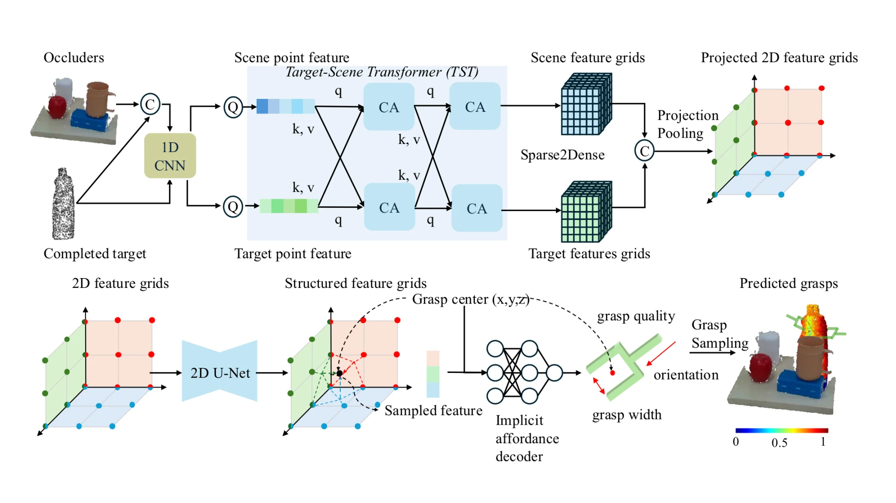

In real-world manipulation, the target object is often partially hidden by nearby objects. Rather than avoiding this challenge through next-best-view planning or occluder removal, TARGO studies direct target-driven grasping from a single RGB-D observation.
This project introduces an occlusion-aware benchmark for target-driven object grasping and a model named TARGO-Net. TARGO-Net segments the visible target, completes its missing geometry, reasons jointly over the completed target and the full cluttered scene, and predicts collision-free grasps that remain robust under high visual occlusion.
Grasping performance is evaluated as target visibility decreases.
Training includes occlusion-induced failed grasps from single scenes.
Each occlusion level from 0 to 0.9 contains 1,000 scenes.
Completed target geometry and scene context are fused with cross attention.

TARGO-Synthetic is constructed using VGN objects in PyBullet. Random placement naturally produces many low-occlusion scenes, which are useful for training but insufficient for stress-testing occlusion robustness.
To avoid overestimating performance on easy scenes, the benchmark includes a balanced test set with 1,000 scenes for every occlusion level from 0 to 0.9. TARGO-Real further evaluates transfer to real-world cluttered grasping with a Panda arm setup.
For each cluttered scene, a target object is selected to induce a corresponding single scene, where the same target is observed from the same camera pose but all occluders are removed. The visual occlusion level is computed by comparing visible target pixels in the cluttered scene with target pixels in the single scene.


For example, if 13973 target pixels are visible in the cluttered scene and 25015 pixels are visible in the single scene, the visual occlusion level is 1 - 13973 / 25015 = 0.441.


Let C denote successful grasps in the cluttered scene and S denote successful grasps in the corresponding single scene. The set S \ C captures grasps that are feasible for the isolated target but fail once occluders are present.
Training with these occlusion-induced failures teaches the model how surrounding objects constrain feasible grasps, improving baseline methods by at least 5% and TARGO-Net by about 10%.

On the balanced synthetic test set, existing state-of-the-art methods such as VGN, GIGA, EdgeGraspNet, and ICGNet show a clear performance drop as occlusion increases. TARGO-Net drops by only about 7% even at extreme occlusion levels, while other methods drop by roughly 20% or more.

Given an RGB-D input, TARGO-Net first segments the visible target and completes its missing geometry. Scene and completed target point features are encoded with a 1D CNN, then fused by the Target-Scene Transformer (TST) with cross attention.
The fused sparse 3D features are converted to dense grids, projected into 2D feature planes, and refined by a 2D U-Net. An implicit affordance decoder predicts grasp quality, orientation, and gripper width for each grasp center, after which the highest-quality collision-free grasp is selected.
In real-world Panda arm experiments, the performance gap becomes even clearer. Baselines such as GIGA decrease by about 40% from easy to hard scenes, while TARGO-Net remains robust with only about a 13% drop.